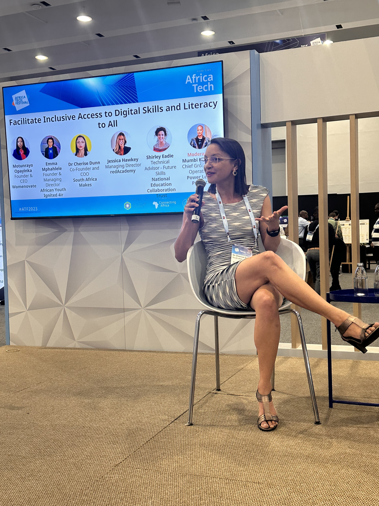
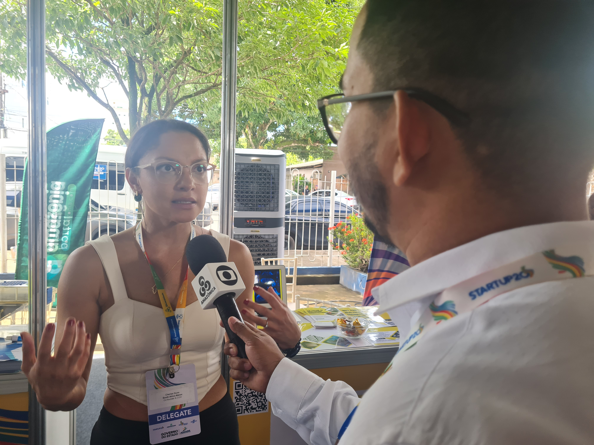

Founder-operator experience
Building healthcare manufacturing capability
Co-founded and operated initiatives focused on point-of-care medical devices, digital manufacturing, local production models, and access-oriented healthcare innovation.
Founder-Operator | Strategic Advisor | Healthcare Innovation | AI | Digital Manufacturing
Healthcare innovation strategy for institutions moving from ambition to implementation.
Dr. Cherise Dunn advises health systems, public institutions, universities, funders, and innovation partners on AI adoption, digital manufacturing, health equity, and cross-sector execution.
Advises
Health systems, public institutions, universities, funders, and innovation partners.
Builds
Practical strategies for AI adoption, digital manufacturing, health equity, and cross-sector implementation.
Proof
Harvard, UCT, G20 Startup20, BRICS, IVLP, TEDx, and MIT AI Ventures.
Selected credibility and institutional platforms
Harvard · UCT · U.S. State Department IVLP · G20 Startup20 · BRICS · TEDx · MIT AI Ventures Founder-operator credibility across healthcare innovation, public health, digital manufacturing, and global health-policy platforms.


Founder Thesis
Dr. Cherise Dunn helps institutions make better decisions about what to build, how to govern it, who to partner with, and how to move healthcare innovation beyond concept papers, pilots, and public commitments.
Her work sits at the intersection of AI adoption, digital manufacturing, health equity, public health, and cross-sector execution.
She is best suited for institutions trying to turn promising health technologies, partnerships, and equity commitments into practical implementation models.
Selected proof
Selected roles, platforms, awards, and institutional work with direct relevance to healthcare innovation, AI adoption, digital manufacturing, and health equity implementation.
Founder-operator experience
Co-founded and operated initiatives focused on point-of-care medical devices, digital manufacturing, local production models, and access-oriented healthcare innovation.
Funding and technology-transfer support
Led funded and partner-supported initiatives that translated healthcare innovation and digital manufacturing capability into practical point-of-care production work.
Institutional partnerships
Built and supported partnerships involving Stanford University, Autodesk, Formlabs, and the U.S. State Department to advance digital manufacturing and healthcare implementation.
Global platform credibility
Selected for platforms including G20 Startup20, BRICS, IVLP, TEDx, and MIT AI Ventures, spanning health innovation, public leadership, AI, and emerging-market entrepreneurship.
Technical and public-health depth
Combines doctoral scientific training, Harvard public-health training, founder-operator experience, and practical venture-building across healthcare innovation and manufacturing.
For advisory, partnership, speaking, board, funder, or public-sector conversations, request an advisory conversation.
Advisory focus areas
Dr. Dunn helps senior leaders decide where to invest, how to structure partnerships, and how to move healthcare innovation into practice.
Her background combines founder experience, Harvard public-health training, digital manufacturing work, AI adoption strategy, and experience across international health, policy, and entrepreneurship platforms.
Typical outputs include advisory memos, strategic roadmaps, partnership architecture, AI use-case prioritisation, implementation-risk reviews, stakeholder briefings, and executive workshops.
Helping institutions decide where to invest, what to build, which partnerships matter, and how to move from ambition to implementation.
Supporting practical use-case selection, risk review, governance considerations, and implementation pathways for responsible AI adoption in healthcare and public-health settings.
Advising on point-of-care production, distributed manufacturing models, medical-device pathways, and supply resilience for healthcare systems.
Designing strategies that connect policy intent, operational delivery, access barriers, and community needs in underserved health settings.
Aligning public, private, university, funder, and implementation partners around clear roles, governance, delivery responsibilities, and shared outcomes.
Best-fit advisory situations
You are evaluating an AI or digital health initiative and need a practical adoption pathway.
You are exploring healthcare manufacturing, point-of-care production, or local capability-building.
You are designing a health equity, access, or public-health innovation initiative.
You need to align public, private, university, funder, or implementation partners.
You need an expert briefing, workshop, or strategic review before committing resources.
Selected implementation contexts
These are the institutional contexts where Dr. Dunn’s founder, public-health, digital manufacturing, and advisory experience is most useful.
The context: Healthcare systems need more locally responsive ways to design and produce medical devices.
Dr. Dunn’s relevance: Founder-operator supporting digital manufacturing and health innovation initiatives.
Credibility signal: Funding, partnerships, and technology-transfer support secured for health manufacturing work.
The context: Healthcare innovation often struggles to move from idea to practical delivery.
Dr. Dunn’s relevance: Advisor and founder working across public health, innovation, partnerships, and implementation.
Credibility signal: International recognition through G20 Startup20, BRICS, IVLP, TEDx, and MIT AI Ventures.
The context: New technologies need practical adoption pathways that are ethical, equitable, and implementable.
Dr. Dunn’s relevance: Strategic advisor helping institutions assess use cases, operating models, and partnership requirements.
Credibility signal: Cross-sector credibility across health, manufacturing, public health, and international innovation platforms.
Audience fit
For teams evaluating healthcare innovation, AI adoption, manufacturing capability, or access strategies.
For institutions translating scientific, technical, or public-health work into practical innovation pathways.
For organisations assessing where innovation support, technology transfer, and partnership design can create real implementation value.
For conversations requiring credible expertise across healthcare innovation, AI, digital manufacturing, and health equity.
Speaking and media
Dr. Dunn is available for selected talks, panels, interviews, and moderated conversations on healthcare innovation, AI adoption, digital manufacturing, health equity, and implementation.

TEDx Cape Town
Talk on healthcare innovation, digital manufacturing, access, and regional capability-building.
Open talk

YouthX
Conversation on founder perspective, innovation leadership, and execution.
Open interview

Cape Health Tech
Feature on founder leadership in public health technology.
Open feature
Speaking topics
Why promising health innovations often fail to scale, and what institutions need to do differently.
Practical use cases, governance questions, risk, and equity considerations.
How local and distributed manufacturing can support access, supply resilience, and innovation.
How to design innovation strategies that work for real communities, not only for pitch decks.
Lessons from building health innovation ventures across African and global platforms.
Public leadership
Selected images from speaking, founder, and healthcare innovation environments.


Press and recognition
Selected recognition across healthcare innovation, entrepreneurship, public leadership, digital manufacturing, and emerging-market innovation.
Press
Most Innovative Company recognition in South Africa.
View source

Award
Awarded for leadership in technology and innovation across Africa.
View source
Leadership Program
International Visitor Leadership Program for Women in Business.
View source
Global Forum
Delegate selection for the G20 Startup20 platform.
View source
Global Forum
Finalist distinction for emerging-markets innovation leadership.
View source
Talk Platform
TEDx Cape Town talk on healthcare innovation and regional capability.
View source
Program
AI, entrepreneurship, and venture-building program.
View source
Press
Public-interest press coverage.
View source
Recognition
Recognition for women’s leadership, innovation, and entrepreneurship.
Regional Platform
Regional trade and investment platform.
View source
FAQ
Brief answers for institutions, partners, and media.
Dr. Cherise Dunn is a founder-operator and strategic advisor working across healthcare innovation, AI adoption, digital manufacturing, and health equity.
She advises health systems, public institutions, universities, funders, and innovation partners on healthcare innovation strategy, AI adoption, digital manufacturing, health equity implementation, and cross-sector partnership design.
She combines doctoral scientific training, Harvard public-health training, founder-operator experience, digital manufacturing work, and international platform credibility across health, policy, entrepreneurship, and innovation.
Best-fit inquiries come from executive teams, public institutions, universities, funders, strategic partners, conference organisers, media, and boards working on healthcare innovation, AI adoption, digital manufacturing, or health equity.
Yes. She is available for selected talks, panels, interviews, and media conversations on healthcare innovation, AI adoption, digital manufacturing, health equity, and implementation.
Institutions can request an advisory conversation through the contact form. Please include the organisation, decision context, timeline, and intended outcome.
Work With Dr. Dunn
If you are evaluating AI adoption, healthcare manufacturing, health equity, or cross-sector implementation, request an advisory conversation.
Best-fit conversations include strategic advisory, institutional partnership, speaking, media, board, funder, and public-sector opportunities.
Best-fit inquiries
Please include your organisation, decision context, timeline, and intended outcome when reaching out.
Direct institutional contact
cherise_dunn@hsph.harvard.eduRelevant institutional inquiries are reviewed directly. If there is a clear fit, the next step is usually a short advisory conversation to understand the decision context, intended outcome, stakeholders, and timeline.
For media, speaking, and institutional review
Download CV